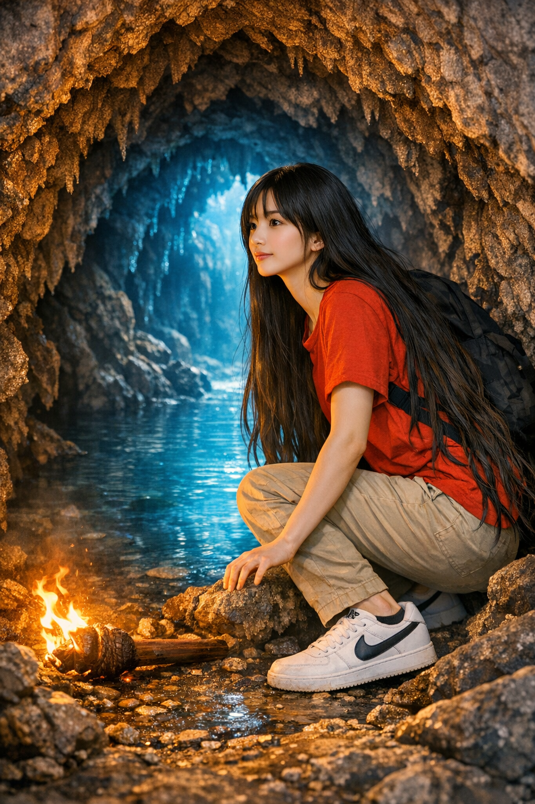
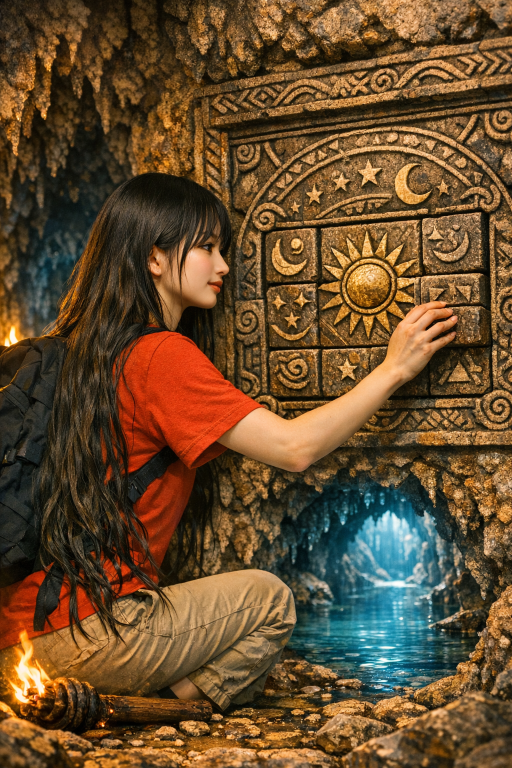

The torch slipped from her fingers, tumbling onto the stone floor with a hiss as its flame met a thin stream of water. Darkness swallowed the cave for a heartbeat — then the world shifted.
A soft blue glow rose from the pool before her, illuminating an underwater passage that shimmered like liquid glass. The air grew cooler, heavy with the scent of minerals and mystery. But as she leaned closer, another light flickered to life — faint, green, and pulsing — from a narrow tunnel to her right. She froze. The blue light beckoned with calm, steady rhythm, promising depth and discovery.


The green light, however, danced erratically, like a heartbeat in the shadows. It felt alive. Watching. Her mind raced. The blue passage whispered of knowledge, of ancient secrets buried beneath the earth. The green light hummed with energy, wild and unpredictable — perhaps a warning, perhaps a call.
She crouched beside the extinguished torch, its smoke curling upward like a question. The cave seemed to breathe around her.